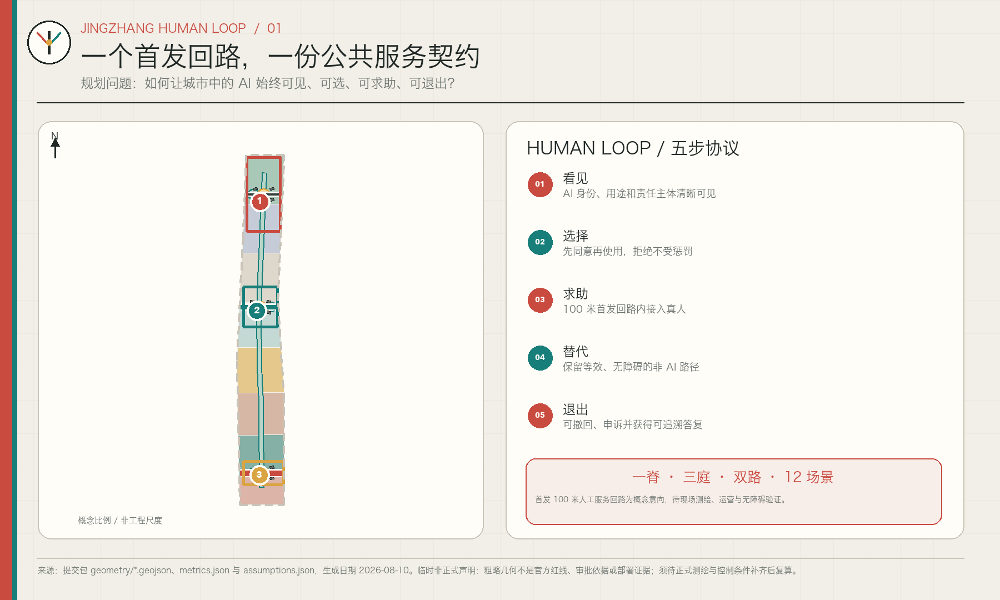
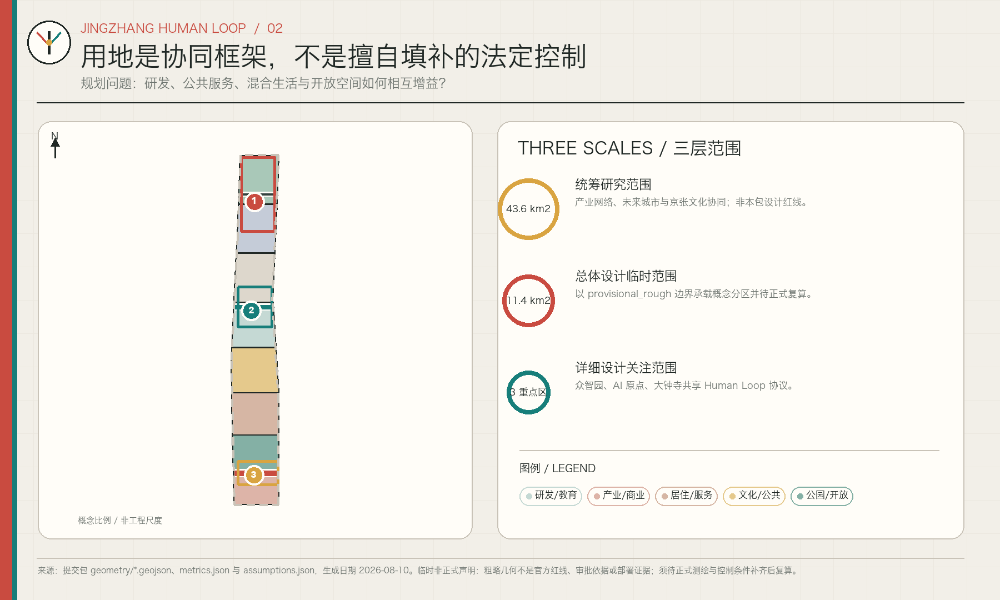
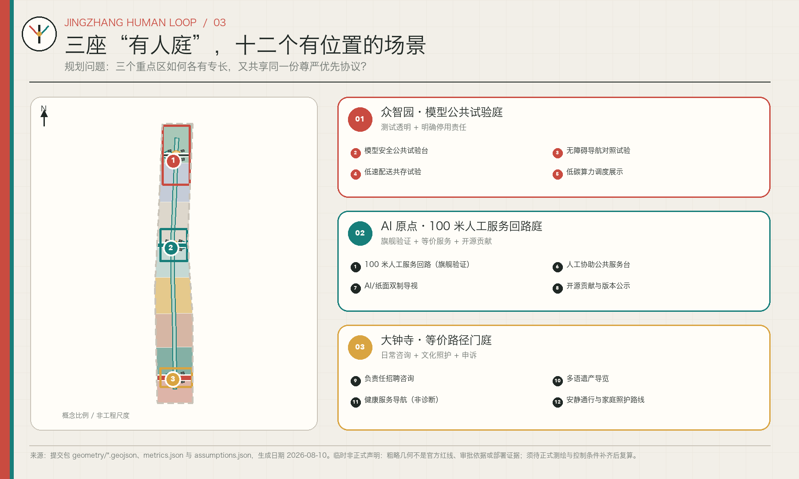
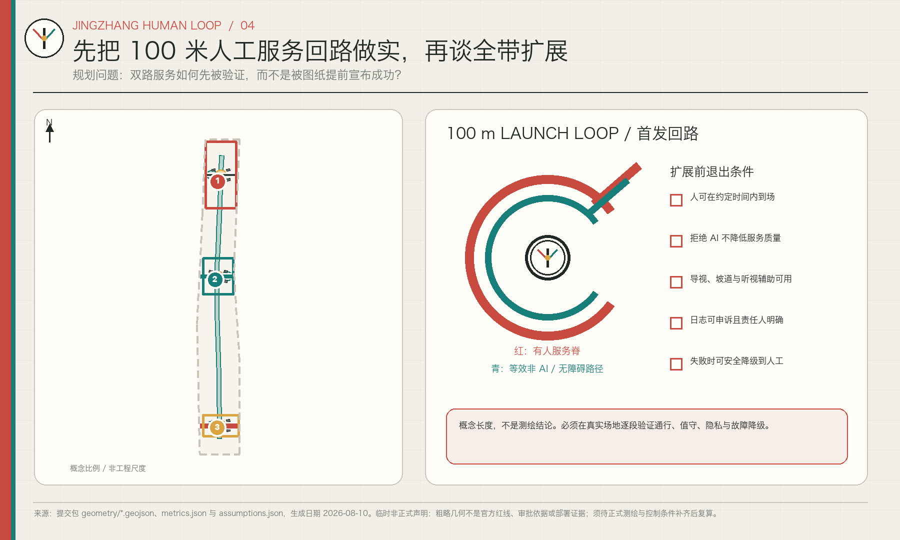
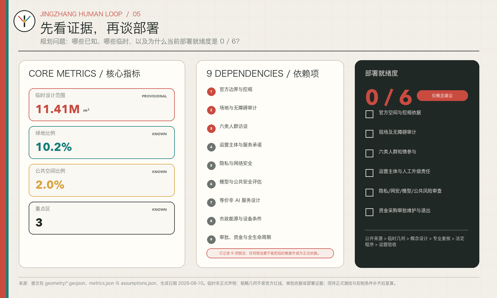

ONE SPINE · THREE COURTS · TWO PATHS · 12 SCENARIOS
总览地图
一脊串联三座“有人庭”；红色有人服务路径与青色等效非 AI / 无障碍路径并行。首发 100 米回路仅为概念控制意向，须在真实场地验证。
site_area_sqm11.41M m²
green_ratio10.2%
public_space_ratio2.0%
key_area_count3
这是一份离线、证据型的概念城市设计展板。Human Loop 为每个城市 AI 服务设定五个公共保证：看见、选择、求助、等效非 AI 路径，以及退出与申诉。
一脊串联三座“有人庭”；红色有人服务路径与青色等效非 AI / 无障碍路径并行。首发 100 米回路仅为概念控制意向，须在真实场地验证。
三层范围 · 重点区域

建筑 · 更新项目

产业生态、未来城市、文化叙事。
概念分区、更新框架、蓝绿慢行。
三庭共享协议，场景按责任暂时映射。
AI 场景

蓝绿公共空间

任务覆盖

图件来自同一提交包中的 GeoJSON、metrics.json、assumptions.json、任务矩阵和公开来源记录；机器可审计文件优先于本页。
边界、控规、现状建筑、权属、文保、交通、市政、生态、需求与运营条件均待专业团队和主管部门核验。当前假设条目数：9